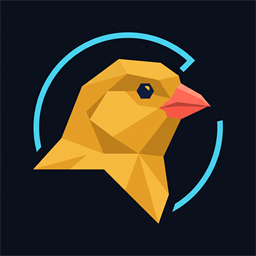

The canary in the coal mine. Canary reads your EVE Online logs and warns you before a gank pack finds you, while tracking mining, ISK and missions live in your browser. Everything runs on your own machine, no login, no account.
One command, that is all. Python is installed along the way if needed, then Canary starts by itself and creates a shortcut.
Press the Windows key, type "PowerShell", open it and paste:
irm https://raw.githubusercontent.com/Eve-Online-Askend/eve-canary/main/install.ps1 | iexOpen a terminal and paste:
curl -fsSL https://raw.githubusercontent.com/Eve-Online-Askend/eve-canary/main/install.sh | shCanary finds the log folder on its own, including inside the Wine prefix on Linux. If that fails it simply asks you on first start. Game logging must be enabled in the EVE client, which is the default setting.
Ore, m³ per hour, ISK value at current market prices, compression and cargo hold. Per character, even with twenty accounts at once.
Player attacking, cargo full, asteroid depleted, strip miner off, drones no longer delivering, mining rate collapsed. With sound and desktop notification, even when the window is in the background.
Pilots in local get rated automatically: suspected ganker, PvP active or harmless. If several flagged pilots turn up together, Canary raises a gank-fleet warning on its own. Based on public data from zKillboard and ESI, no login required.
Spots gank packs before they find you. Canary reads the public killmail stream, clusters who keeps killing together in your regions and gives each pack a score, a hunting ground and a last-seen time. A known pack member showing up in your local triggers an instant spoken warning, and known gank groups get flagged by name. Public data only, nothing leaves your machine.
A single hashrate-style number for your whole fleet's mining output in m³/min, with a rank from Prospector to Rorqual Overlord. ESI-verified against the EVE mining ledger, tamper-proof, and shareable as an image in one click.
Boosting in an Orca, Porpoise or Rorqual? Canary spots the command ship automatically and shows the fleet mining power plus who compressed how much through its compression service, by name and amount. Even fleet members who do not run Canary show up, straight from your own booster log. Requires the optional EVE login so the ship can be detected.
Your entire ore stock, raw and compressed, across every station and structure of all your EVE-connected chars. Total volume and ISK value at a glance, then a breakdown of what is stored where, with station icons. On top, Canary tells you what pays off more: selling raw, selling compressed, or refining. Pulled from ESI assets with a clear as-of and next-sync time.
Every colony across all your characters in one view, sorted by what needs re-arming first, with an alert before an extractor expires. Shows what each planet produces, tagged P0 to P4, the stored ISK per colony and each planet's image. Straight from ESI, no spreadsheets.
Rewards, time bonuses and bounties from the wallet journal, plus top agents and which enemies dealt you the most damage. Belt rats are filtered out.
Select your cargo hold in game, copy it, paste it here. Canary works out the value for Jita, Amarr, Rens, Dodixie and Hek and shows where selling pays off.
For Orca and Porpoise: Canary calculates how long the industrial core will keep running and warns you in good time.
30 days, all time and analysis: best day, efficiency, played time, ore balance by value. Stays in a local database, even after EVE has long deleted the logs.
One sheet per character: portrait, corp, ship and net worth at a glance. Next to it, a six-axis radar shows what this character is actually good at, mining, missions, PvP, combat power, scaled against your own strongest character.
Your day as a feed. Every mining trip, every fight and every reward shows up as its own entry, newest first, so you can scroll back through what actually happened instead of just totals.
With the official EVE login Canary also shows ship, wallet, portrait and cargo hold. Everything it fetches is read only, the sole exception opens an info window in your own client as a shortcut. No setup, revocable at any time.
Other tools each cover a single piece. Canary is the only one that fuses live mining, gank-pack warnings, your whole compression fleet and mission tactics in one window, and it does it fully locally, with no cloud and no account. Your data stays yours.
| EVE Canary | Cloud dashboards | DPS overlays | |
|---|---|---|---|
| Runs locally, no server | ✓ | ✗ | ✓ |
| No account, no login | ✓ | ✗ | ✓ |
| Your data stays on your machine | ✓ | ✗ | ✓ |
| Live mining m³/h from the game log | ✓ | ✗ | ✗ |
| Gank-pack radar with instant local warning | ✓ | ✗ | ✗ |
| For Orca and Porpoise pilots: fleet-wide compression stats, even fleet members without the tool | ✓ | ✗ | ✗ |
| Mission faction tips and verified rewards | ✓ | ✗ | ✗ |
| Ore treasury across every location | ✓ | ~ | ✗ |
| Combat and DPS | ✓ | ~ | ✓ |
| Free | ✓ | ~ | ✓ |
Categories, not specific products. A "~" means partly, or only in some of them.
Canary pilots who switched sharing on in the options report once a month which size band their yield fell into. No exact figures, no names, nothing about who or where. The totals below add up the lower bound of every band, so the real number is higher, never lower.
localhost:8765.
There is no server, no account and no sign up.Canary reports problems with a short code. It appears in the console window and in the options under "System & Data". There you will find the button 🩺 Copy diagnostics, which puts a report on your clipboard that you can pass on directly. The report contains no character names and no credentials.
| Code | Meaning |
|---|---|
CN-LOG-03 | Folder found, but no game logs inside. Almost always the path points at logs instead of logs/Gamelogs. |
CN-NET-01 | Market prices unavailable, usually just a brief loss of connection. |
CN-ESI-01 | ESI request failed, goes away after a fresh EVE login. |
CN-SRV-01 | Internal error. Please report this one. |
The full list is in the installation guide.
It started as a small log reader that just told you "strip miner off". Today it's a full cockpit: mining, missions, gank-pack radar, ore treasury, character sheets, planetary industry. Built in the open, one milestone at a time, always local and free.
Canary got better because people gave their time: streamers who put it on screen next to the game, players who handed over years of their log files, testers who reported the awkward bugs instead of just uninstalling. Every name here changed something in the tool.
Helped out and not listed? Get in touch and you go on the list.
Loading version history …